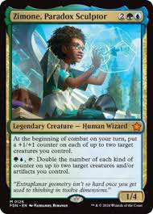
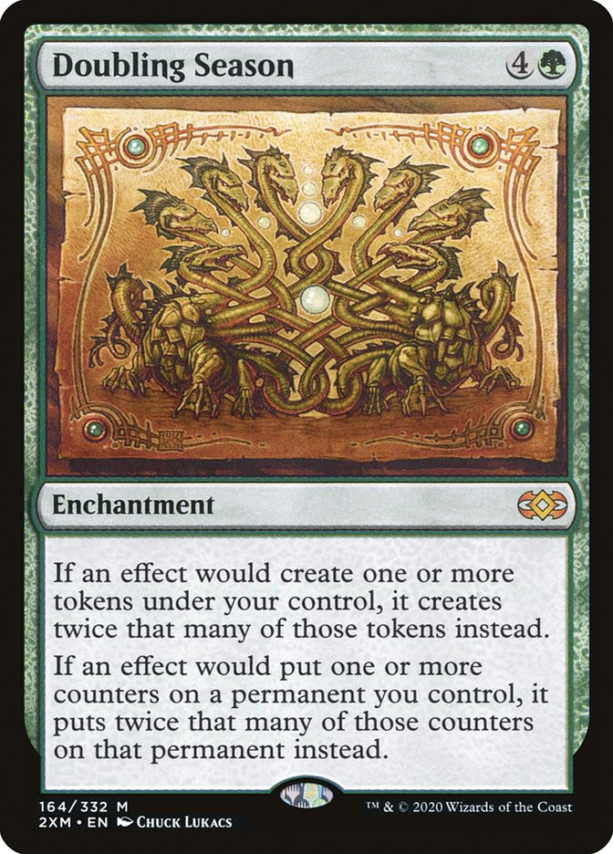
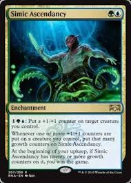

Main Deck
Creatures
- Zimone, Paradox Sculptor
- Aegis Turtle
- Burnished Hart
- Clinquant Skymage
- Deepglow Skate
- Drake Hatcher
- Dreamtide Whale
- Evolution Sage
- Grappling Kraken
- Herald of Secret Streams
- Homunculus Horde
- Kiora's Follower
- Koma, World-Eater
- Llanowar Elves
- Pir, Imaginative Rascal
- Quilled Greatwurm
- Reclamation Sage
- Scrawling Crawler
- Sire of Seven Deaths
- Spinner of Souls
- Tatyova, Benthic Druid
- Toothy, Imaginary Friend
- Treetop Snarespinner
- Tribute Mage
- Twenty-Toed Toad
- Vorel of the Hull Clade
- Wildwood Scourge
PlanesWalkers
- Tamiyo, Compleated Sage
Sorceries
- Bushwhack
- Felling Blow
- Genesis Wave
- Grow from the Ashes
- Lunar Insight
- Self-Reflection
Enchantments
- Doubling Season
- Garruk's Uprising
- Imprisoned in the Moon
- Omniscience
- Simic Ascendancy
- Sphinx's Tutelage
- Sylvan Scavenging
- Witness Protection
Artifacts
- Arcane Signet
- Commander's Sphere
- Everflowing Chalice
- Ichormoon Gauntlet
- Sol Ring
- Swiftfoot Boots
- Smokestack
- The Millennium Calendar
Instants
- Aetherize
- Counterspell
- An Offer You Can't Refuse
- Essence Capture
- Essence Scatter
- Fleeting Distraction
- Inspiring Call
- Snakeskin Veil
- Think Twice
Lands
- Command Tower
- Evolving Wilds
- 15x Forest
- Rogue's Passage
- 22x Island
- Thronwood Falls

Zimone is the commander for this deck giving +1/+1 counters each combat
her ability to tap and double any type of counter on each creature or artifcat you control
can quickly snowball your creaturs damage and survivability
the doubling of counters helps to speed up your win condition through cards like
Simic Ascendancy or Millennium calender

Doubling Season is one of the more powerful cards in the deck
doubling counters generated and tokens created
This enchantment can help you fill the board with tons of buffed up token creatures
combined with Zimone you can quadruple counters made further helping with win conditions

Simic Ascendancy is one of the Win condition cards in the deck along with Millennium calender and Twenty-Toed Toad
with the quick amount of counters that you will make with Zimone and other methods you can easily fufil the win condition